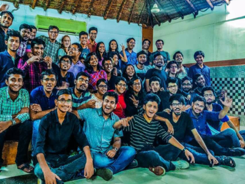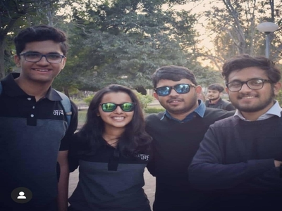
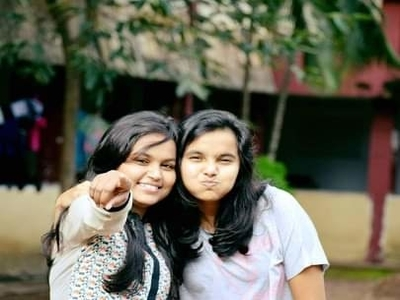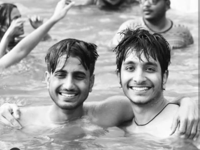
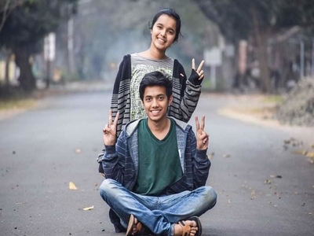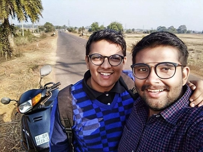
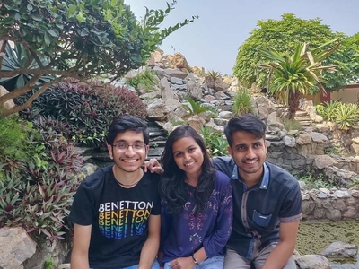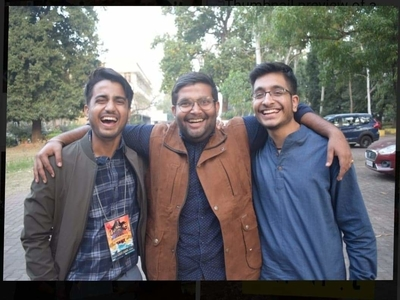
वो आवाज़ थी, आवाज़ की
अनजान थे उस रात हम,
फिर भी हस कर बात की l
मुझे याद है वो आवाज़ भी
जिसने खोले है राज़ कई
और वो आवाज़,
जिसके पास कोई राज़ नहीं
मुझे याद है वो आवाज़ भी
जिसने मिलवाया था हम सबको कभी
शांत थे उस रात भी,
है शांत अभी भी,
उस वक़्त कुछ कहना ना था
अब कुछ कहने को नहीं
मुझे याद हैं वो आवाज़ भी
आवाज़ के लिए, वो आवाज़ भी
जो दिलाई थी याद हमें हमारे कर्त्तव्य की
पंच परमेश्वर के लिए साथ आने की ll
मुझे याद है, वो आवाज़ भी
वो अड्डे की रात भी
जब सोच रहे थे हम कोई बात नयी
पर फिर भी खुश थे, जब मिला कुछ नहीं
अब परिवार हैं आवाज़ वही,
आवाज़ है,आवाज़ की l
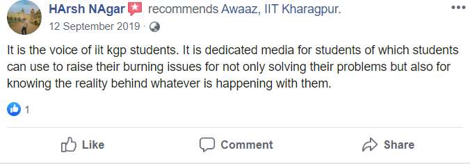
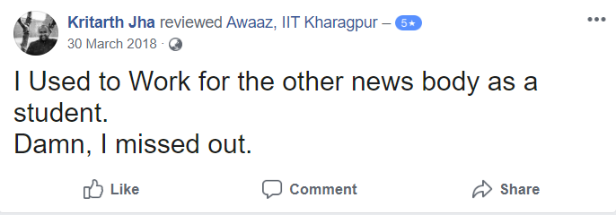
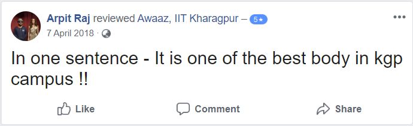
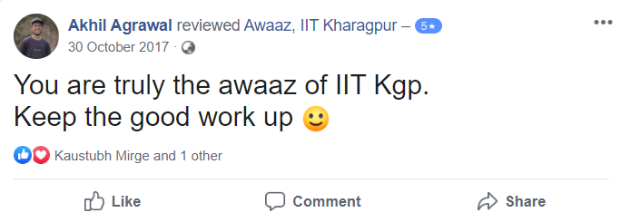
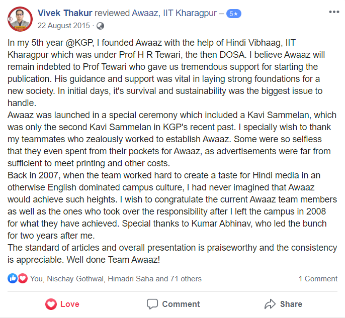

क्या है दोस्ती?
पहला प्यार है दोस्ती, पहली लड़ाई भी है दोस्ती
बचपन का साथ है दोस्ती,जवानी का नशा,
और बुढ़ापे का सहारा है दोस्ती
अटूट बंधन है दोस्ती, आज़ादी का एहसास है दोस्ती
राधा-कृष्ण का प्यार है दोस्ती, एक तरफा प्यार की वफा है दोस्ती
बचपन की मासूमियत है दोस्ती, जवानी का रस है दोस्ती
सच्चाई का सच है दोस्ती, दुख का मरहम है दोस्ती
अधूरे को पूरा करती है दोस्ती, ज़िन्दगी के गीत को सुरीला करती है दोस्ती
जाड़े की धूप है दोस्ती, गर्मी में सर्द हवा है दोस्ती
बारिश की महक है दोस्ती, सुबह की ओस है दोस्ती
ईश्वर की भक्ति है दोस्ती, बिना शर्त किसी से प्यार है दोस्ती
बिना मांगे देना है दोस्ती, मांँ की बाहों में उसकी संतान है दोस्ती
दिलो को जोड़ने वाला तार है दोस्ती, एक दूसरे के लिए मर मिटने का जज़्बा है दोस्ती
बिछड़ने का गम है दोस्ती और वापस मिलने पर आंँखो मै उठी चमक है दोस्ती
दोस्ती भाव ही कुछ ऐसा है कि इसका व्याख्यान शब्दों या भावनाओ का मोहताज नहीं
यह तो एक असीम सुख,प्यार,कभी ना अंत होने वाले साथ का एहसास है
बस इतना समझ लीजिए कि जन्म और मौत के बीच का सफ़र है दोस्ती
यह मामूली प्रयास आवाज़ परिवार के नाम ❤️